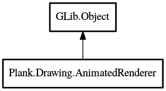

Object
AnimatedRenderer
Object Hierarchy:
Description:
public abstract class AnimatedRenderer :
Handles animated rendering. Uses a timer and continues requesting redraws for a widget until no more animation is needed.
All known sub-classes:

Namespace: Plank.Drawing
Package: plank
Content:
Properties:
Creation methods:
Methods:
Inherited Members:
All known members inherited from class GLib.Object